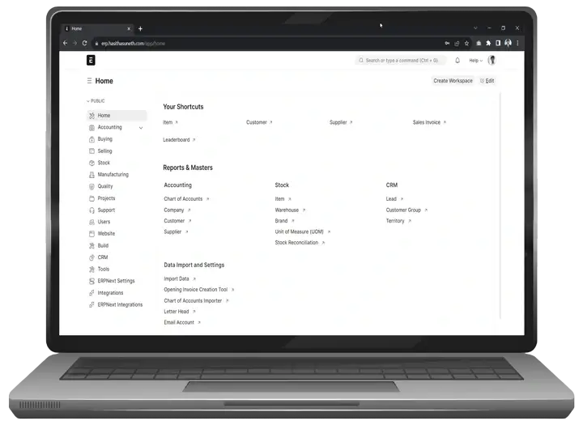
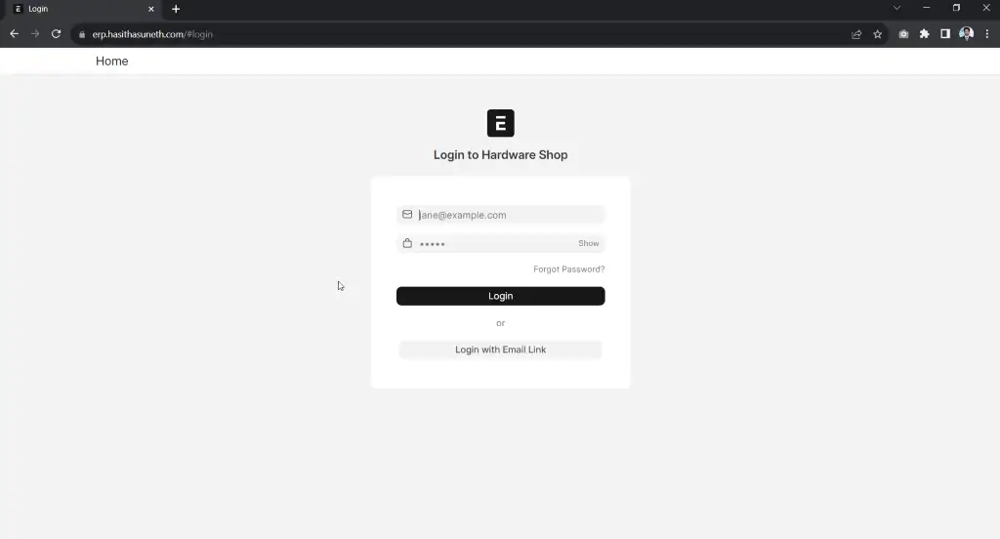
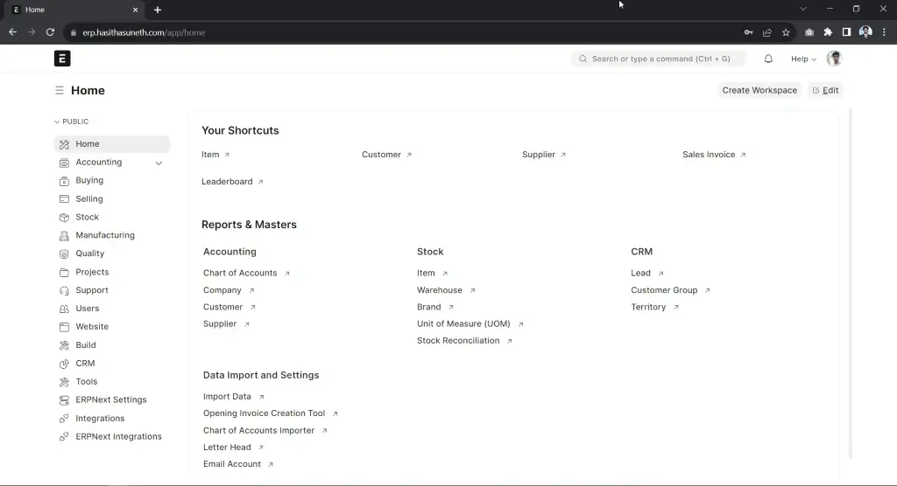
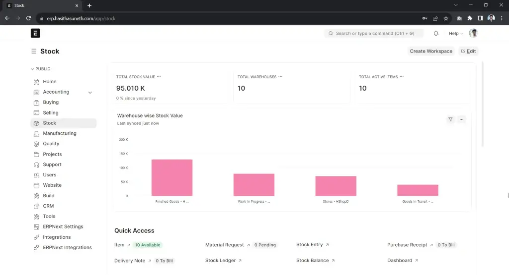

ERPNext Deployment
ERPNext is an open-source, all-in-one enterprise resource planning (ERP) software that helps businesses manage operations like accounting, inventory, HR, and more in an easy-to-use platform.
Table of contents
What is ERPNext?
ERPNext is a comprehensive, open-source ERP solution designed to streamline and automate a wide range of business processes. Built with simplicity and flexibility in mind, it caters to organizations of all sizes across various industries. Key features include:
- Accounting: Manage finances, invoices, payments, and reports.
- Inventory Management: Track stock levels, manage warehouses, and optimize supply chains.
- Human Resources: Handle employee records, payroll, and recruitment seamlessly.
- CRM: Enhance customer relationships with tools for tracking leads, opportunities, and interactions.
- Project Management: Plan, execute, and monitor projects with timelines and task assignments.
- Manufacturing: Simplify production planning, BOMs, and work orders.
- Customizability: Offers modular design and user-friendly customization for diverse needs.
ERPNext provides a modern, cloud-based interface and is backed by an active community, making it a cost-effective choice for businesses seeking a scalable and open-source ERP system.
Website Documentation GitHub Demo

In this tutorial, we are going to install ERPNext with the Docker Compose.
Steps to follow
- Install Docker, and Docker-Compose
- Deploy ERPNext
Install Docker, and Docker-Compose
Install Docker Engine
Note
Find the official guide here. Follow this official guide for install Docker on other Linux distribution systems.
1. Uninstall old versions
sudo apt-get remove docker docker-engine docker.io containerd runc
2. Set up the repository
Update the apt package index and install packages to allow apt to use a repository over HTTPS:
sudo apt-get update sudo apt-get install ca-certificates curl gnupg lsb-release
Add Docker’s official GPG key:
sudo mkdir -m 0755 -p /etc/apt/keyrings curl -fsSL https://download.docker.com/linux/ubuntu/gpg | sudo gpg --dearmor -o /etc/apt/keyrings/docker.gpg
Use the following command to set up the repository:
echo \ "deb [arch=$(dpkg --print-architecture) signed-by=/etc/apt/keyrings/docker.gpg] https://download.docker.com/linux/ubuntu \ $(lsb_release -cs) stable" | sudo tee /etc/apt/sources.list.d/docker.list > /dev/null
3. Install Docker Engine
sudo apt-get update sudo apt-get install docker-ce docker-ce-cli containerd.io
Verify that the Docker Engine is installed correctly.
sudo systemctl is-active docker
Install Docker-Compose
In this case (29/12/2024), it is v2.31.0; Refer to the GitHub Releases to identify the latest version.
Download and install Compose standalone latest version
curl -SL https://github.com/docker/compose/releases/download/v2.31.0/docker-compose-linux-x86_64 -o /usr/local/bin/docker-compose sudo chmod +x /usr/local/bin/docker-compose
Verify that the Docker-Compose is installed correctly.
sudo docker-compose --version
Add your linux user to the Docker group (*optional)
sudo usermod -aG docker $USER
Deploy Nginx Proxy Manager
Create a new file docker-compose.yml file.
version: "3"
services:
backend:
image: frappe/erpnext:v15.44.0
restart: unless-stopped
volumes:
- sites:/home/frappe/frappe-bench/sites
- logs:/home/frappe/frappe-bench/logs
configurator:
image: frappe/erpnext:v15.44.0
entrypoint:
- bash
- -c
# add redis_socketio for backward compatibility
command:
- >
ls -1 apps > sites/apps.txt;
bench set-config -g db_host $$DB_HOST;
bench set-config -gp db_port $$DB_PORT;
bench set-config -g redis_cache "redis://$$REDIS_CACHE";
bench set-config -g redis_queue "redis://$$REDIS_QUEUE";
bench set-config -g redis_socketio "redis://$$REDIS_QUEUE";
bench set-config -gp socketio_port $$SOCKETIO_PORT;
environment:
DB_HOST: db
DB_PORT: "3306"
REDIS_CACHE: redis-cache:6379
REDIS_QUEUE: redis-queue:6379
SOCKETIO_PORT: "9000"
volumes:
- sites:/home/frappe/frappe-bench/sites
- logs:/home/frappe/frappe-bench/logs
create-site:
image: frappe/erpnext:v15.15.0
volumes:
- sites:/home/frappe/frappe-bench/sites
- logs:/home/frappe/frappe-bench/logs
entrypoint:
- bash
- -c
command:
- >
wait-for-it -t 120 db:3306;
wait-for-it -t 120 redis-cache:6379;
wait-for-it -t 120 redis-queue:6379;
export start=`date +%s`;
until [[ -n `grep -hs ^ sites/common_site_config.json | jq -r ".db_host // empty"` ]] && \
[[ -n `grep -hs ^ sites/common_site_config.json | jq -r ".redis_cache // empty"` ]] && \
[[ -n `grep -hs ^ sites/common_site_config.json | jq -r ".redis_queue // empty"` ]];
do
echo "Waiting for sites/common_site_config.json to be created";
sleep 5;
if (( `date +%s`-start > 120 )); then
echo "could not find sites/common_site_config.json with required keys";
exit 1
fi
done;
echo "sites/common_site_config.json found";
bench new-site --no-mariadb-socket --admin-password=admin --db-root-password=admin --install-app erpnext --set-default frontend;
db:
image: mariadb:10.6
healthcheck:
test: mysqladmin ping -h localhost --password=admin
interval: 1s
retries: 15
restart: unless-stopped
command:
- --character-set-server=utf8mb4
- --collation-server=utf8mb4_unicode_ci
- --skip-character-set-client-handshake
- --skip-innodb-read-only-compressed # Temporary fix for MariaDB 10.6
environment:
MYSQL_ROOT_PASSWORD: admin
volumes:
- db-data:/var/lib/mysql
frontend:
image: frappe/erpnext:v15.15.0
depends_on:
- websocket
restart: unless-stopped
command:
- nginx-entrypoint.sh
environment:
BACKEND: backend:8000
FRAPPE_SITE_NAME_HEADER: frontend
SOCKETIO: websocket:9000
UPSTREAM_REAL_IP_ADDRESS: 127.0.0.1
UPSTREAM_REAL_IP_HEADER: X-Forwarded-For
UPSTREAM_REAL_IP_RECURSIVE: "off"
PROXY_READ_TIMEOUT: 120
CLIENT_MAX_BODY_SIZE: 50m
volumes:
- sites:/home/frappe/frappe-bench/sites
- logs:/home/frappe/frappe-bench/logs
ports:
- "8080:8080"
queue-long:
image: frappe/erpnext:v15.15.0
restart: unless-stopped
command:
- bench
- worker
- --queue
- long,default,short
volumes:
- sites:/home/frappe/frappe-bench/sites
- logs:/home/frappe/frappe-bench/logs
queue-short:
image: frappe/erpnext:v15.15.0
restart: unless-stopped
command:
- bench
- worker
- --queue
- short,default
volumes:
- sites:/home/frappe/frappe-bench/sites
- logs:/home/frappe/frappe-bench/logs
redis-queue:
image: redis:6.2-alpine
restart: unless-stopped
volumes:
- redis-queue-data:/data
redis-cache:
image: redis:6.2-alpine
restart: unless-stopped
volumes:
- redis-cache-data:/data
scheduler:
image: frappe/erpnext:v15.15.0
restart: unless-stopped
command:
- bench
- schedule
volumes:
- sites:/home/frappe/frappe-bench/sites
- logs:/home/frappe/frappe-bench/logs
websocket:
image: frappe/erpnext:v15.15.0
restart: unless-stopped
command:
- node
- /home/frappe/frappe-bench/apps/frappe/socketio.js
volumes:
- sites:/home/frappe/frappe-bench/sites
- logs:/home/frappe/frappe-bench/logs
volumes:
db-data:
redis-queue-data:
redis-cache-data:
sites:
logs:
Start the ERPNext
docker-compose up -d
# check the container status
docker-compose ps
Login to the web UI of ERPNext
Default Admin User:
Username: Administrator
Password: admin
Now you can log in to the web UI. Simply use your browser to connect to your server by using the IP address or an FQDN and connect on port 8080.
Next, you should change your username and password, and that’s it!
NGINX Configuration (If you are behind a reverse proxy)
Replace
ip_addresswith the IP address of your ERPNext instance, or use127.0.0.1if the Nginx server is running on the same instance.# /etc/nginx/sites-available/your_domain.com server { listen 80; server_name your_domain.com; location / { proxy_pass http://ip_address:8080; proxy_set_header Host $host; proxy_set_header X-Real-IP $remote_addr; proxy_set_header X-Forwarded-For $proxy_add_x_forwarded_for; proxy_set_header X-Forwarded-Proto $scheme; } }
Screenshots


